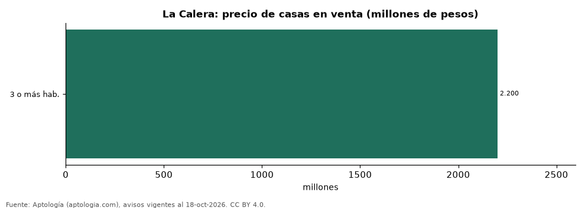

Casas en venta y arriendo en La Calera (Cundinamarca): precio, m² y sectores (octubre 2026)
Estudio con datos abiertos (CC BY 4.0). Versión original: https://github.com/elbroker/aptologia-datos/tree/main/estudios/casas-en-venta-y-arriendo-la-calera-2026 · DOI: 10.5281/zenodo.23481491
En La Calera la oferta es sobre todo de casas: una casa en venta se pide en la mediana 2.200 millones de pesos, con 360 m² de área y 6,05 millones de pesos por m²; arrendar una casa cuesta 12.000.000 pesos al mes. El sector más caro de la muestra es Conjunto Casa de Campo, con 2.900 millones de pesos por casa. De 1.834 avisos, el 88,7 % son casas.
Resumen: analizamos 1.834 avisos de vivienda en La Calera (1.328 casas en venta y 298 en arriendo).
Actualizado: 18 de octubre de 2026 (datos del 18 de octubre de 2026) · Próxima actualización: mensual.

Resumen
| Indicador | Valor |
|---|---|
| Casa en venta (mediana) | 2.200 millones de pesos |
| Precio por m² (casas) | 6,05 millones de pesos |
| Área mediana | 360 m² |
| Casa en arriendo (mediana) | 12.000.000 pesos |
Casas en venta por sector
| Sector | Precio casa (mediana) | Avisos |
|---|---|---|
| Conjunto Casa de Campo | 2.900 millones de pesos | 45 |
| Vereda el Hato | 2.600 millones de pesos | 43 |
| El Libano | 2.270 millones de pesos | 64 |
| Centro | 2.200 millones de pesos | 91 |
| Arboretto | 2.200 millones de pesos | 61 |
| San José de la Concepción | 2.200 millones de pesos | 68 |
| La Calera | 2.200 millones de pesos | 214 |
| Paso Real | 2.000 millones de pesos | 57 |
| El Salitre | 1.925 millones de pesos | 32 |
| Vereda el Salitre | 1.850 millones de pesos | 53 |
| El Hato | 1.730 millones de pesos | 48 |
Medianas del precio pedido; solo sectores con 30 avisos o más.
Resumen por tipo
| Tipo | Precio (mediana) | Avisos |
|---|---|---|
| Casas en venta | 2.200 millones de pesos | 1.328 |
| Casas en arriendo | 12.000.000 pesos al mes | 298 |
| Apartamentos en venta | 420 millones de pesos | 141 |
Casas en venta por habitaciones
| Habitaciones | Precio (mediana) | Avisos |
|---|---|---|
| 3 o más hab. | 2.200 millones de pesos | 1.297 |
Preguntas frecuentes
¿Cuánto cuesta una casa en La Calera? 2.200 millones de pesos en la mediana de casas en venta (octubre de 2026), unos 6,05 millones de pesos por m².
¿Cuánto cuesta arrendar una casa en La Calera? 12.000.000 pesos al mes en la mediana.
Metodología
- Fuente: exportes nocturnos de la base de datos de Aptología (aptologia.com) del 18 de octubre de 2026: avisos vigentes de vivienda en portales inmobiliarios de 13 países, recogidos por Aptología y vistos en línea entre el 11 y el 18 de octubre de 2026. Corte: 18 de octubre de 2026.
- Depuración: se eliminan duplicados exactos (misma ciudad, zona, tipo, precio, moneda, área, habitaciones y baños) y los precios fuera del percentil 1–99 de cada país, operación, moneda y tipo; el precio por m² usa solo avisos con área declarada entre 12 y 2.000 m² y también se recorta al P1–P99.
- Qué se mide: precios pedidos (publicados), no precios de cierre. En arriendo, el canon mensual sin administración, gastos comunes ni condominio.
- Muestra mínima: cada cifra publicada se apoya en al menos 30 avisos; las celdas con menos se omiten.
- Colombia: Precios en pesos colombianos, sin conversión de moneda.
- Limitaciones: la cobertura depende de los portales que recorre Aptología en cada país y es mayor en las ciudades grandes y en los segmentos medio-alto y alto; el área es la que declara el aviso, sin verificar; los nombres de zona vienen de los portales.
- Privacidad: solo se publican agregados; no se publica ningún dato personal, enlace a avisos ni nombre de anunciante.
- Datos abiertos: datos.csv, licencia CC BY 4.0.
Cómo citar
Pinzón Pineda, D. M. (2026). Casas en venta y arriendo en La Calera (Cundinamarca): precio, m² y sectores (octubre 2026). Aptología (aptologia.com). https://github.com/elbroker/aptologia-datos/tree/main/estudios/casas-en-venta-y-arriendo-la-calera-2026. Datos: datos.csv, licencia CC BY 4.0.